Publications
3 minutes
*Equal contribution

360+x: A Panoptic Multi-modal Scene Understanding Dataset
Hao Chen, Yuqi Hou, Chenyuan Qu, Irene Testini, Xiaohan Hong, Jianbo Jiao
IEEE/CVF Conference on Computer Vision and Pattern Recognition (CVPR), Oral Presentation (3.3% of accepted papers), 2024
[PDF] [BibTeX] [arXiv] [Project Page]
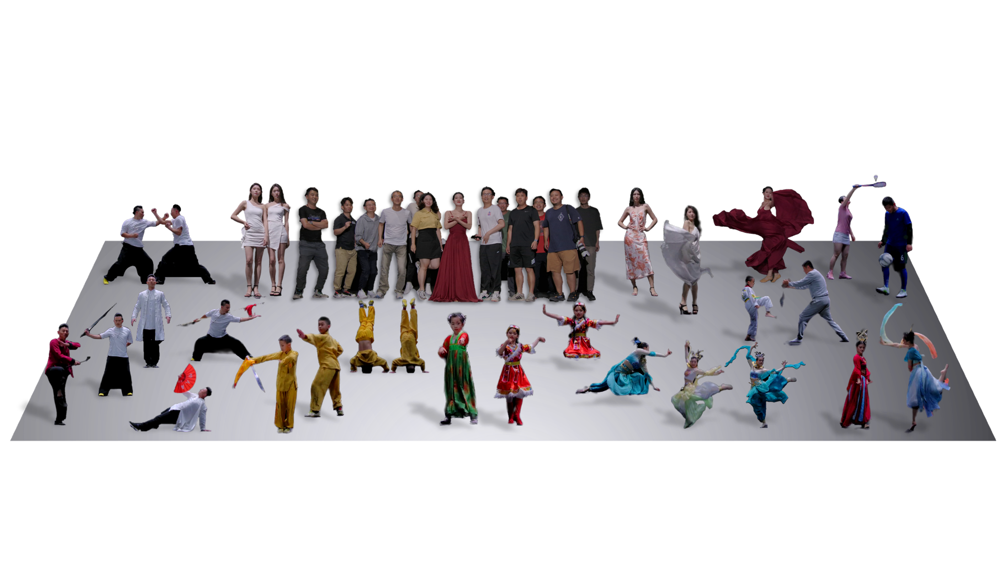
DyMVHumans: A Multi-View Video Benchmark for High-Fidelity Dynamic Human Modeling
Xiaoyun Zheng, Liwei Liao, Xufeng Li, Jianbo Jiao, Rongjie Wang, Feng Gao, Shiqi Wang, Ronggang Wang
IEEE/CVF Conference on Computer Vision and Pattern Recognition (CVPR), 2024
[PDF] [BibTeX] [arXiv] [Project Page]
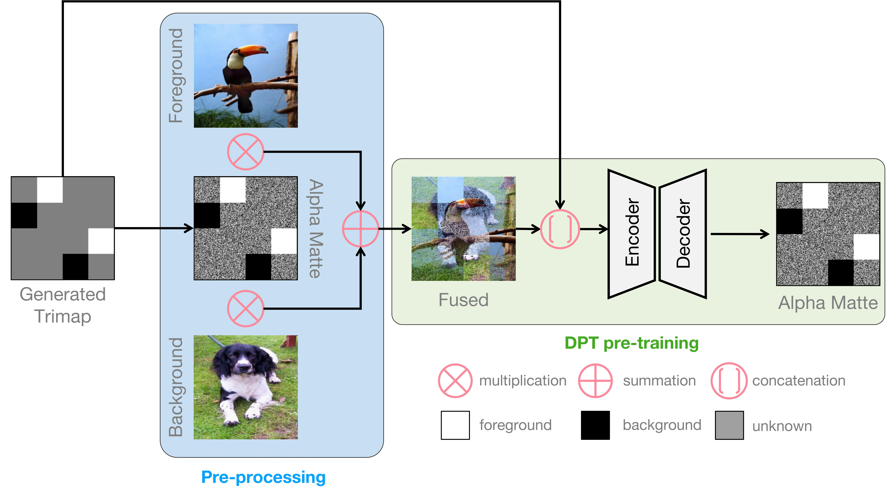
Disentangled Pre-training for Image Matting
Yanda Li, Zilong Huang, Gang Yu, Ling Chen, Yunchao Wei, Jianbo Jiao
IEEE/CVF Winter Conference on Applications of Computer Vision (WACV), Oral Presentation (2.5% of accepted papers), 2024
[PDF] [BibTeX] [Code] [Project Page]
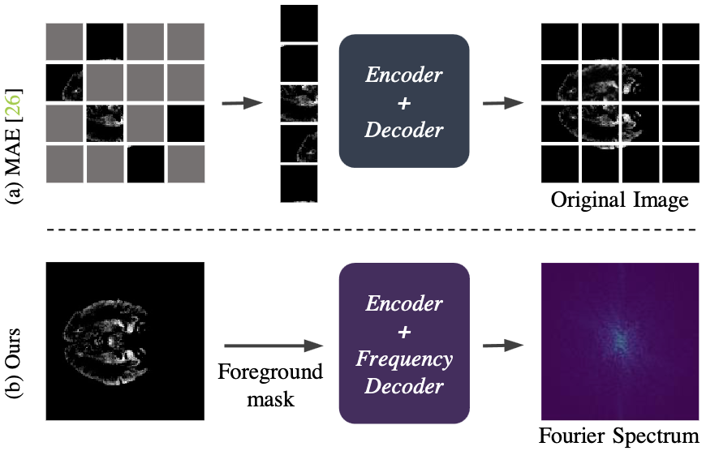
FreMIM: Fourier Transform Meets Masked Image Modeling for Medical Image Segmentation
Wenxuan Wang*, Jing Wang*, Chen Chen, Jianbo Jiao, Yuanxiu Cai, Shanshan Song, Jiangyun Li
IEEE/CVF Winter Conference on Applications of Computer Vision (WACV), 2024
[PDF] [BibTeX] [Code] [Project Page]
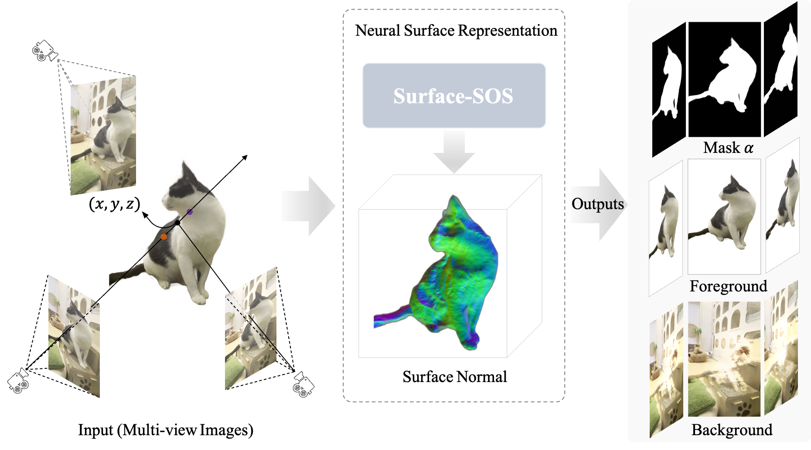
Surface-SOS: Self-Supervised Object Segmentation via Neural Surface Representation
Xiaoyun Zheng, Liwei Liao, Jianbo Jiao, Feng Gao, Ronggang Wang
IEEE Transactions on Image Processing (T-IP), 2024
[PDF] [BibTeX] [Code]
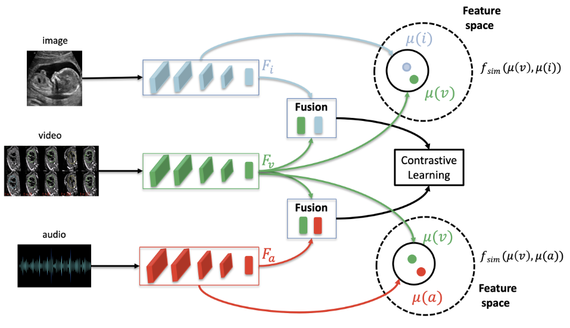
Dual Representation Learning from Fetal Ultrasound Video and Sonographer Audio
Mourad Gridach, Mohammad Alsharid, Jianbo Jiao, Lior Drukker, Aris Papageorghiou, Alison Noble
IEEE International Symposium on Biomedical Imaging (ISBI), Oral Presentation, 2024
[PDF] [BibTeX]
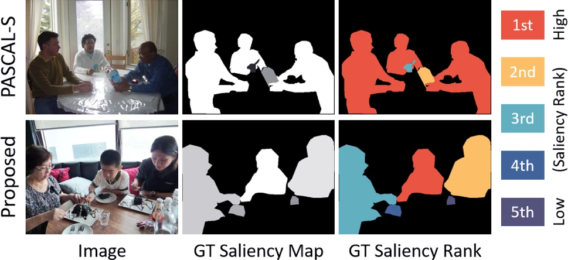
Inferring Attention Shifts for Salient Instance Ranking
Avishek Siris, Jianbo Jiao, Gary K.L. Tam, Xianghua Xie, Rynson W.H. Lau
International Journal of Computer Vision (IJCV), 2023
[Article] [BibTeX] [Code]

Multi-view Self-supervised Disentanglement for General Image Denoising
Hao Chen*, Chenyuan Qu*, Yu Zhang, Chen Chen, Jianbo Jiao
IEEE/CVF International Conference on Computer Vision (ICCV), 2023
[PDF] [ArXiv] [BibTeX] [Code] [Project Page]
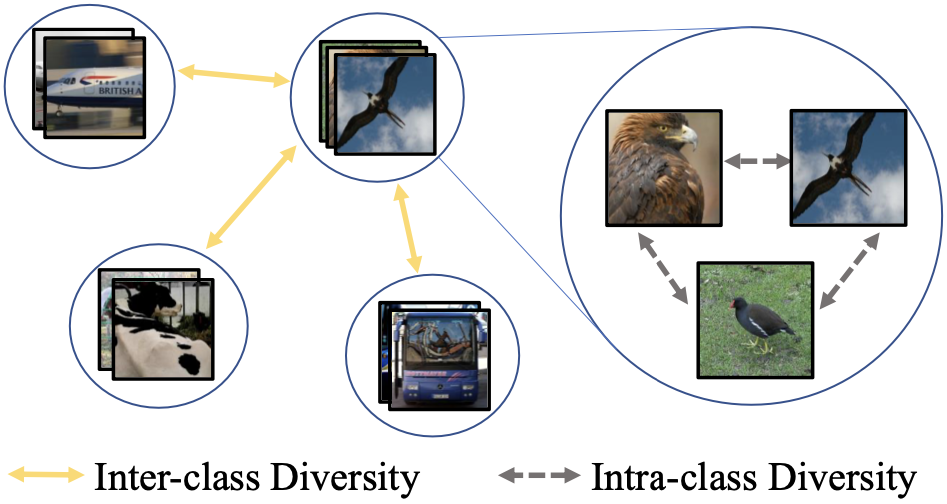
CoinSeg: Contrast Inter- and Intra- Class Representations for Incremental Segmentation
Zekang Zhang, Guangyu Gao, Jianbo Jiao, Chi Harold Liu, Yunchao Wei
IEEE/CVF International Conference on Computer Vision (ICCV), 2023
[PDF] [BibTeX] [Code]
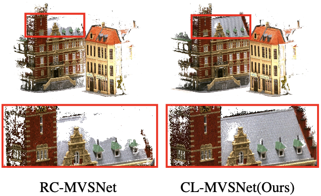
CL-MVSNet: Unsupervised Multi-view Stereo with Dual-level Contrastive Learning
Kaiqiang Xiong, Rui Peng, Zhe Zhang, Tianxing Feng, Jianbo Jiao, Feng Gao, Ronggang Wang
IEEE/CVF International Conference on Computer Vision (ICCV), 2023
[PDF] [BibTeX] [Code] [Project Page]
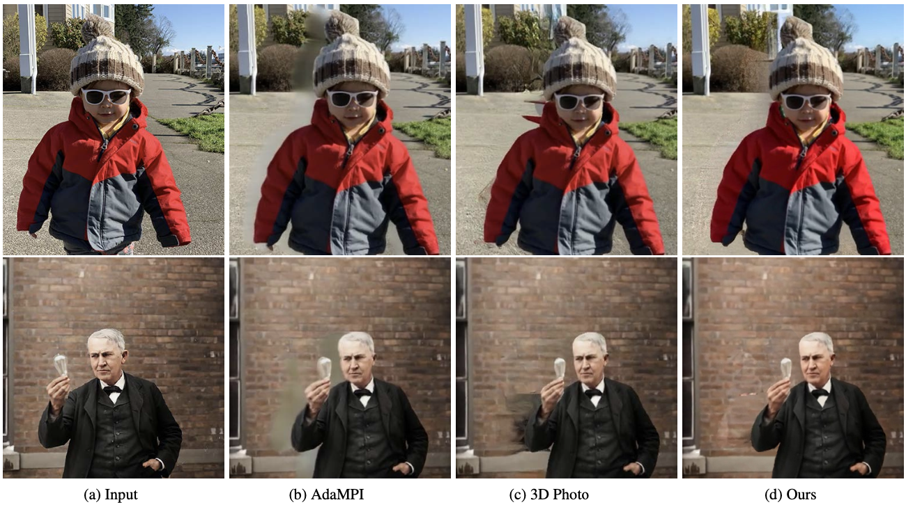
Diffuse3D: Wide-Angle 3D Photography via Bilateral Diffusion
Yutao Jiang, Yang Zhou, Yuan Liang, Wenxi Liu, Jianbo Jiao, Yuhui Quan, Shengfeng He
IEEE/CVF International Conference on Computer Vision (ICCV), 2023
[PDF] [BibTeX] [Code] [Video]
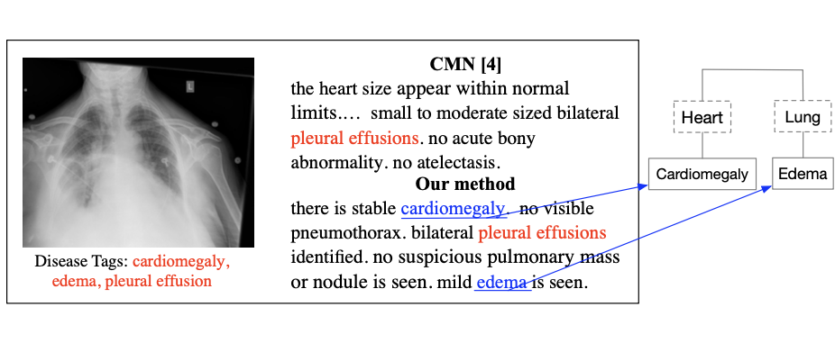
Bridging the Gap: Cross-modal Knowledge Driven Network for Radiology Report Generation
Beichen Kang, Yun Xiong, Jianbo Jiao, Yao Zhang, Xing Jia, Ji Li
IEEE International Conference on Bioinformatics and Biomedicine (BIBM), 2023
[PDF] [BibTeX] [Code]

Speed Co-Augmentation for Unsupervised Audio-Visual Pre-training
Jiangliu Wang, Jianbo Jiao, Yibing Song, Stephen James, Zhan Tong, Chongjian Ge, Pieter Abbeel, Yun-Hui Liu
IEEE/CVF Conference on Computer Vision and Pattern Recognition (CVPR) Workshop on Sight and Sound, 2023
[PDF] [BibTeX] [Code]
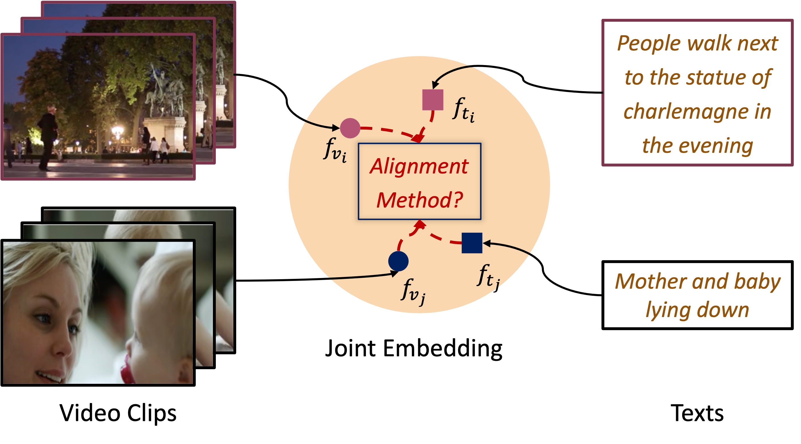
Cali-NCE: Boosting Cross-modal Video Representation Learning with Calibrated Alignment
Nanxuan Zhao, Jianbo Jiao, Weidi Xie, Dahua Lin
IEEE/CVF Conference on Computer Vision and Pattern Recognition (CVPR) Workshop on Foundation Model, 2023
[PDF] [BibTeX] [Code]
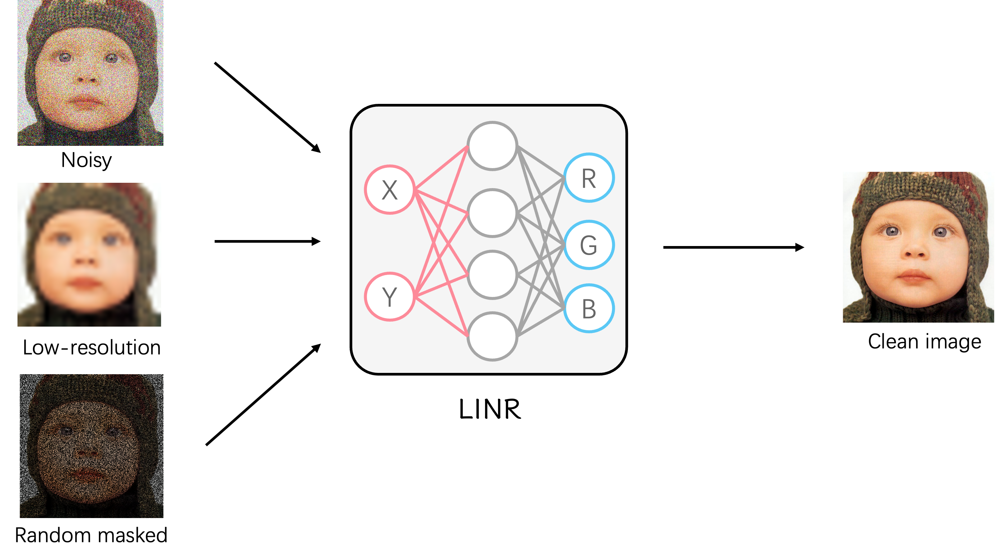
Revisiting Implicit Neural Representations in Low-Level Vision
Wentian Xu, Jianbo Jiao
International Conference on Learning Representations (ICLR) Neural Fields Workshop, 2023
[PDF] [ArXiv] [BibTeX] [Code] [Project Page]
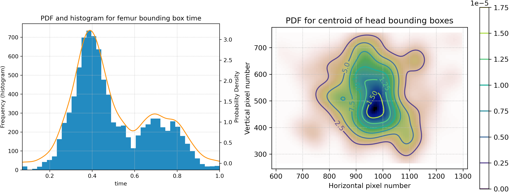
A Kernel Density Estimation based Quality Metric for Quality Assessment of Obstetric Ultrasound Video
Jong Kwon, Jianbo Jiao, Alice Self, Alison Noble, Aris Papageorghiou
International Conference on Learning Representations (ICLR) Trustworthy Machine Learning for Healthcare Workshop, 2023
[PDF] [BibTeX] [Code]
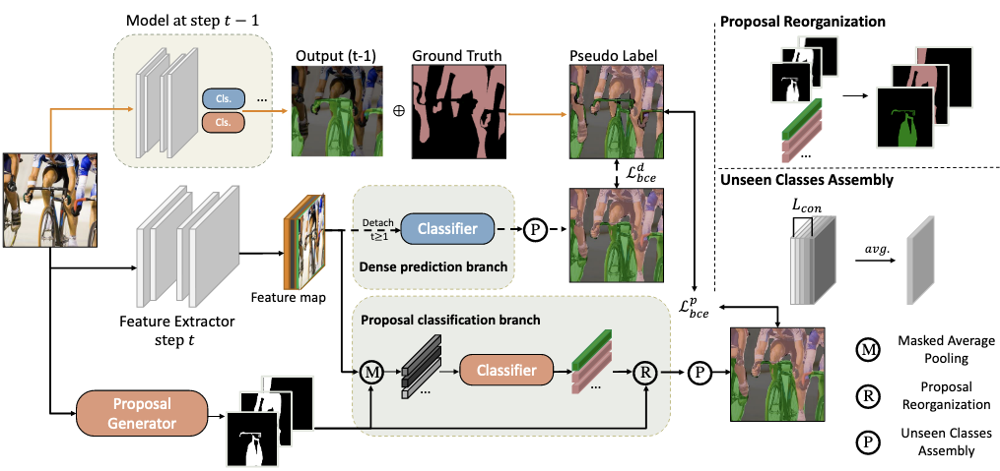
Mining Unseen Classes via Regional Objectness: A Simple Baseline for Incremental Segmentation
Zekang Zhang, Guangyu Gao, Zhiyuan Fang, Jianbo Jiao, Yunchao Wei
Conference on Neural Information Processing Systems (NeurIPS), 2022
[PDF] [BibTeX] [Code]
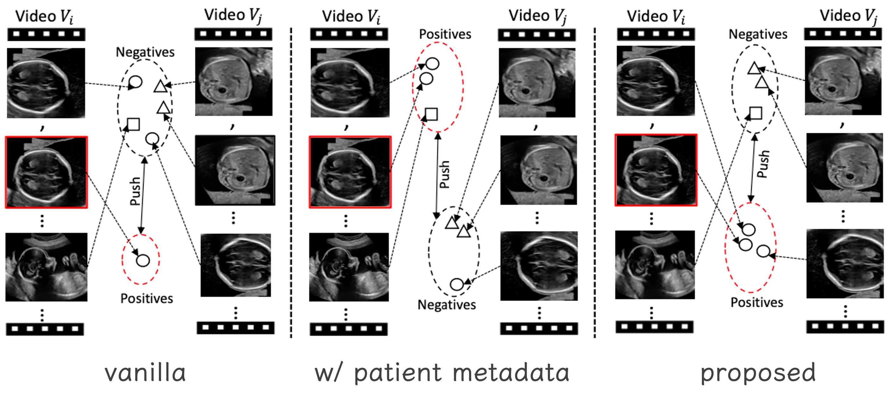
{kind=link}